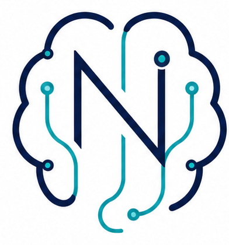

Specialist medical leadership
Medical oversight and specialist expertise are intended to sit at the centre of complex decision-making.
Novus Neuro Clinic is being developed to improve access to clinically robust, evidence-based neurodevelopmental care that is accessible, inclusive and focused on long-term patient outcomes.

Understanding neurodevelopmental needs can affect education, work, relationships, confidence, mental wellbeing and quality of life. Our mission is to reduce avoidable delays without compromising diagnostic quality or patient safety.
The planned model combines specialist medical leadership with a wider network of appropriately trained healthcare professionals. Straightforward presentations should move efficiently, while diagnostic uncertainty, overlapping conditions or more complex clinical needs can receive additional specialist review.
Medical oversight and specialist expertise are intended to sit at the centre of complex decision-making.
Clinical discussion, peer review and escalation routes are part of the planned governance model.
Safeguarding, information governance, audit, complaints, incident learning and supervision are being designed from the outset.
Individual needs, strengths and differences matter.
Measure whether care makes a meaningful difference.
Patients and families should be heard and involved.
Assessment should create useful clarity, not just a label.
Evidence, ethics, governance and continuous improvement.
Our founders' vision sets out the longer-term ambition for assessment, post-diagnostic care, accessibility, outcomes, education and future service development.